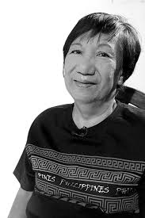

AUTHOR PORTFOLIO
A Filipino novelist whose literature gave voice to women, families, and communities experiencing social and political change.

SHORT BIOGRAPHY
Lualhati Torres Bautista was born on December 2, 1945, in Tondo, Manila. She became one of the foremost Filipina novelists in contemporary Philippine literature.
She was known for her honest realism, courageous exploration of Philippine women's issues, and compelling female protagonists. Her works connected personal experiences with larger social, political, and cultural realities.
Bautista began writing at the age of 16, and her parents, who were both teachers, greatly influenced her passion for literature and writing. She started her writing career with Liwayway Magazine. Despite having no formal training in writing, her works gained recognition and inspired many readers. She was known for her honest realism courageous exploration of Philippines Women's Issues during the Marcos era, and compelling Female Protagonists
Bautista received several “Palanca Awards” for her literary works. Among her most notable novels are “GAPÔ”, “Dekada '70”, and “Bata, Bata... Pa'no Ka Ginawa?” (1980, 1983, and 1984). Throughout her career, she also served as Vice President of the Screenwriters Guild of the Philippines and headed the Association of Popular Novel Writers. She took Journalism in College but eventually dropped out before completing her freshman year because she wanted to focus entirely on writing.
Bautista's works belong to the modern and contemporary period of Philippine literature. Many of her significant works were written during periods of political and social change in the Philippines, particularly during and after the Martial Law era. Bautista died on February 12, 2023, at the age of 77, at her home in Quezon City after battling cancer.
PERSONAL BACKGROUND
Her family background and early life helped shape the perspective that later appeared throughout her writing.
Lualhati Torres Bautista was born on December 2, 1945, in Tondo, Manila. She began writing at the young age of sixteen.
Father Esteban Bautista
Mother Gloria Torres
Her parents were teachers and played an important role in influencing her interest in writing.
Bautista died on February 12, 2023, at the age of 77 at her home in Quezon City.
EDUCATIONAL BACKGROUND
Bautista's education formed part of her early development, while her passion for writing ultimately became the defining path of her life.
Emilio Jacinto Elementary School
Torres High School
She took Journalism but eventually dropped out before completing her freshman year, choosing to pursue her passion for writing.
WRITING CAREER
Bautista started writing at the age of 16. Her parents' influence and her passion for literature encouraged her to pursue writing despite not completing her college education.
She first developed her professional writing career through Liwayway Magazine. Her work eventually expanded into novels, screenwriting, and other forms of literary and popular writing.
Bautista became recognized for her honest realism and her courageous exploration of Philippine women's issues, particularly during the Marcos era.
Her female protagonists frequently challenge traditional expectations while confronting family, gender, social, and political conflicts.
She started writing at the age of sixteen.
Her literary career included recognition through the Carlos Palanca Memorial Awards.
She was named a 2020 Gawad CCP Para sa Sining awardee for Literature.
PROFESSIONAL CONTRIBUTIONS
Bautista also contributed to Philippine screenwriting and popular literature.
SCREENWRITING
Bautista served as Vice-President of the Screenwriters Guild of the Philippines, reflecting her contribution to Philippine screenwriting.
POPULAR LITERATURE
She was also involved in the organization of popular novel writers, supporting the development of Philippine popular literature.
LITERARY RECOGNITION
Lualhati Bautista was named among the awardees of the 2020 Gawad CCP Para sa Sining for Literature. The recognition highlights her significant contribution to Philippine literature.
View CCP Reference